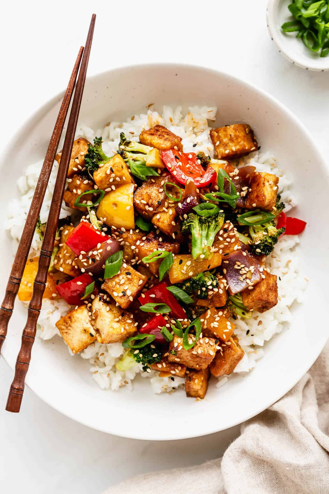

home
tofu stir fry

description:
this dish is one of those weekly powerhouses. it's healthy, fast, and
tastes incredible. it takes less than half an hour to put together,
and it serves two people. my parents used to cook this for me growing
up, and it was one of my favourites back then. still is. i got my
girlfriend addicted to it, too.
ingredients:
- jasmine rice: 1.5 cups
- tofu: 1 package, dried and cut into preferred size
- broccoli: 1 head, chopped
- bell pepper: 1, chopped
- white onion: 1 large, diced
- neutral oil: 3 tbsp
- soy sauce: 1/4 cups
- rice vinegar: 2 tbsp
- sesame oil: 1 tsp
- sriracha: to taste
- ginger: 1 knob, diced
- sesame seeds: garnish
steps:
- cook rice in rice cooker using instructions on package
- set wok or large pan on medium heat
- pat dry tofu using paper towel, place in wok along with
coconut oil. periodically stir tofu until all sides are
golden
- remove tofu, re-oil wok, and fry vegetables in the pan
(order: onion, pepper, brocolli). fry until vegetables are
cooked to desireable texture. re-integrate tofu into wok
- mix soy sauce, sesame oil, rice vinegar, sriracha, ginger,
and garlic together. optional: make cornstarch slurry and
add to mixture
- douse wok with sauce mixture. stir and let sit until
it cools down before eating. garnish with sesame seeds